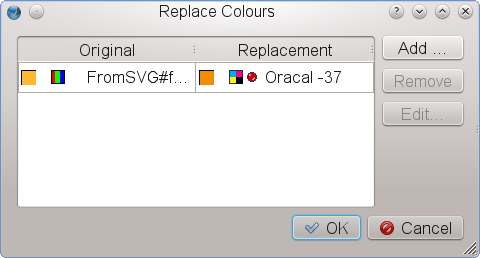

What’s New in Scribus 1.4.4?
This is a cursory overview over the changes in Scribus compared to the latest stable version of the 1.3.3.x series (1.3.3.14).
Note that the file format has changed between 1.3.3.x and 1.4.x and is not backwardly compatible with any prior stable version (1.3.3.14 or earlier). To be precise, you will not be able to open 1.4.x files with version 1.3.3.14 or any earlier version.
General
- On initial launch, Scribus 1.4.x will offer to inherit the configuration data from any existing prior version, but it will store them separately, so you can run Scribus 1.3.3.x in parallel with 1.4.x
- You can install both versions in parallel and run them at the same time. The only caveat is to install them using different installation directories, e.g., 1.3.3.x in
/usr/local and 1.4.x in /opt or $home/bin on Linux/UNIX. If you’re building Scribus from source, you can use the -DCMAKE_INSTALL_PREFIX:PATH= argument to configure where Scribus should be installed. On other platforms you can determine the location during the installation process.
New in Scribus 1.4.4
Qt4 Port
One of the major endeavours on the way from 1.3.3.x to 1.4.x was the porting to the Qt4 toolkit. Among others, it enabled a vastly better performance under Mac OS X, as well as the creation of native DMGs for OS X. Scribus 1.4.x DMGs will run on OS X 10.5 or later. It also enabled a port for the Haiku operating system.
More Supported Platforms
Scribus now runs on the following platforms: Linux, FreeBSD, PC-BSD, NetBSD, OpenBSD, Solaris, OpenIndiana, Debian GNU/Hurd, Mac OS X, OS/2 Warp 4, eComStation, Windows 2000 SP 4 or later (32-bit), Windows Vista or later (64-bit). It is also available as Scribus Portable for Windows.
Object Handling
- Significant enhancements to Multiple Duplicate.
- Transform tools as known from Illustrator.
- New options to align and distribute objects.
- Advanced multiple object selection.
Text and Typography
Typography:
- Glyph Extension
- Variable First Line Offset for text frames.
- Character Styles.
- New Style Manager that allows for style hierarchies, cloned styles and style inheritance.
- A new glyph selector which allows for the creation of glyph sets that can be shared between users.
- Major improvements to the hyphenator.
- Optical margins to give the impression of a straighter edge with justified text by moving hyphens, commas and parts of certain glyphs slightly into the margin:
 |
Optical Margins |
Text
- Spellchecking via Hunspell.
- New text variable: Number of pages.
- Undo/Redo is finally available for text-related actions.
Vector Tools
- New default shapes.
- New Path Tools, like Boolean path operations, lens effects or mesh distortion.
- More options for text on path.
 |
Boolean path operations |
Lines
- New line styles.
- Line style editor.
Solid Colors, Gradients and Patterns
- Major improvements to the Color Wheel (support for multiple color models).
- An option to replace solid colors throughout the whole document.
- Support for external color palette formats (EPS, AI, PS, SOC, GPL).
- Locking of standardized color palettes.
- Many new color palettes, among them the national standard color sets of Australia, France, Japan, the United Kingdom and the United States, as well as Resene® color, dtp studio collections, GiveLife Color System®, Galaxy Gauge™ and NAA 10-2006 colors.
- New gradient types.
- Support for pattern fills: All graphics formats supported by Scribus can be used as patterns.
- Emulation of color blindness for all colors in a document.
|  |
Replacing solid colors |
Transparency
- Blending modes as known from Photoshop or GIMP are now available for all objects in a Scribus document and can also be applied to layers.
Render Frames
- One of the major new features is the introduction of Render Frames, a special frame type that allows for rendering the output of programs like LaTeX, Lilypond or POV-Ray inside Scribus.
 |
Render Frame Editor |
Barcode Writer
- The Barcode Writer underwent a significant overhaul and now supports the creation of all major barcode formats, including QR.
Import Filters
- A considerable amount of work has been spent on new import filters for vector formats, most notably Adobe Illustrator (AI). Scribus can now import both EPS and PDF based AI files. Other filters are: Windows Metafile (WMF), Xfig (FIG), Calamus Vector Graphics (CVG), Macintosh PICT (PICT), Kivio Stencils (SML) and Dia Shapes (SHAPE).
 |
Adobe Illustrator import |
Image Handling
- New non-destructive image effects.
- Better handling of PSD-specific features, like clipping paths and layers.
- Major improvements to the image manager.
 |
The new image manager |
Layers
- Scribus layers can now be exported as PDF layers (PDF 1.5 only).
- Duplicate Layers feature.
- Wireframe mode for layers to speed up performance.
- Enforceable text flow around objects on a lower layer.
Pre-press
- Enhancements to the Print Preview, like indication of ink coverage.
- Improvements to the Preflight Verifier.
- New pre-press features, like bleed and printing marks.
- Optional conversion of spot colors to process colors.
PDF Export
- Export to PDF/X-1a.
- Support for PDF 1.5 features, e.g. slide effects for PDF presentations or PDF layers.
- Optional embedding of EPS and PDF files in PDF documents.
- Better font subsetting.
Usability
Much work has been spent on major and minor usability improvements throughout the whole program, e.g.:
- A search feature for the Document Outline.
- Many more viewing options, including a document preview without guides and frame borders.
- One-click activation of color management.
- Context menu for the document canvas with options to insert vector graphics directly or to activate viewing options
- Many more options to automate and speed up the insertion of frames (e.g. Insert Frame dialog, “Sticky Tools” option).
- Enhancements to the Scrapbook.
Templates
- Many templates, donated by artists, have been added.
- We have finally begun to translate the template categories and template descriptions into other languages.
Help System
- The content of the Online Help system has almost doubled since the relase of the latest stable version 1.3.3.14. Moreover, major parts of the existing documentation have been updated or completely rewritten to reflect the feature set of Scribus 1.4+.
- Many new tooltips have been added, and existing ones have been expanded.
- Online help resources are now accessible from the Help menu.